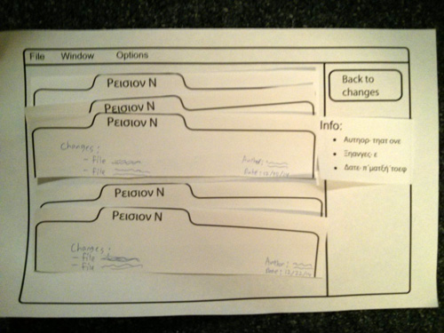
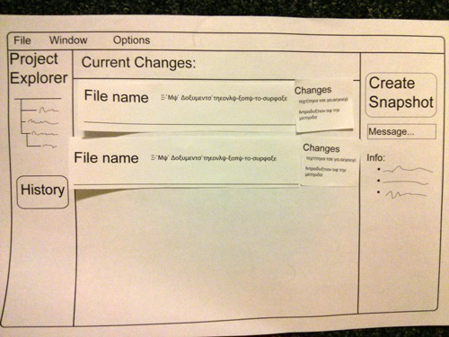
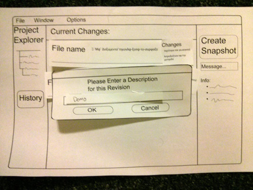

Paper Prototyping Evaluation Report
Briefing:
Hello, thank you for attending. The purpose of this study is to evaluate a potential interface for PaperVC, a version-control software for academic paper writing. The session will take about 5-10 minutes to complete. My name is Benji, and I will be guiding you through the session. This person here will be playing the role of the computer. They will manipulate the interface you see as you interact with it, to simulate how it would really look. You will be given a set of tasks to complete, and then do them to the best of your ability. If you're confused, don't worry. This study is partly to help find such issues. At the end, you'll be given some time to comment on your experience. If at any time you need to leave, just let us know. Thanks again for your time, and let's begin.
Tasks:
- Task 1: Save a snapshot of your current changes.
- Task 2: Find out who made the most recent change.
- Task 3: Find out what was changed on February 22.
Images of prototype:
  
User data:
-
19M: Has worked on academic writing. Date of session: 3/26
Comments and observations:- Took some time to figure out that the revision history can be clicked for more detail.
- Expressed dubiety toward revisions number being displayed on folder display.
- Did not enter the description before creating snapshot.
-
20F: Has no experience in academic writing. Date of session: 3/28
Comments and observations:- Felt that the interface felt too sparse with so much space for a couple buttons.
- Thought "File name" was too big, de-emphasised the actual file name (which is more important).
- Easily found the clicking functionality for folder view of history.
- Felt that there should be more info in general: on the folders, on the change-list, etc.
- Did not enter the description before creating snapshot.
-
31F: Has written several papers. Date of session: 3/28
Comments and observations:- Felt that the changes description for files was too small.
- Said that there needs to be some way of sharing changes with co-authors, getting their changes, etc.
- Thought that the folders in the history view should restructure data: put more important info at top, so that it's more scannable.
- Did not enter the description before creating snapshot.
-
32M: Has written several papers. Date of session: 3/29
Comments and observations:- Felt that the lack of collaboration was a major problem.
- Felt that the folder view for history was a bit cumbersome, but understood that there were limitations with the paper.
- Would probably not use this for actual work.
- Did not enter the description before creating snapshot. (Are you noticing a pattern here?)